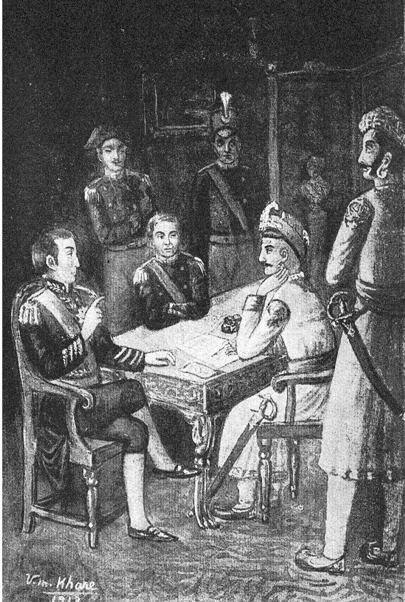

Poona and the Treaty of Bassein
Holkar took Pune and the Peshwa fled to the Company; the treaty signed at Bassein bought his restoration at the price of a subsidiary force, and the confederacy went to war over it.

On 31 December 1802 the Peshwa Bajirao II, a refugee at the old Portuguese town of Bassein north of Bombay, signed a treaty with the East India Company. Two months earlier, on 25 October, Yashwantrao Holkar had defeated the combined forces of the Peshwa and Daulatrao Scindia outside Pune and had installed a rival Peshwa in the city, Amritrao’s son Vinayakrao, with Amritrao as regent. The battle was the settling of a family account as much as a bid for power: Bajirao had had Holkar’s brother Vithoji trampled to death by an elephant the year before, and Yashwantrao had come to Pune for redress the Peshwa’s government would not give. Bajirao fled to the coast and put himself under British protection.
The terms were those Richard Wellesley had already applied to Hyderabad in 1798 and Mysore in 1799. The Peshwa agreed to receive a permanent subsidiary force of six battalions of Company infantry with artillery, to cede territory yielding revenue sufficient to pay for it, to dismiss Europeans of any nation at war with Britain, to give up his claims on Surat and to submit his disputes with other states, the Nizam and the Gaekwad in particular, to Company arbitration. He was not to make war or treaties without British consent. In return the Company undertook to restore him. Arthur Wellesley marched from Mysore and entered Pune on 20 April 1803, and Bajirao was reinstalled in May.
The treaty placed the nominal head of the Maratha state in the position of a client. Scindia and Raghuji Bhonsle of Nagpur, who regarded the Peshwa’s sovereignty as something held in common by the confederacy, refused to accept it, and their refusal brought on the second Anglo-Maratha war of 1803 to 1805. Holkar fought separately and later. Bajirao kept his throne for fifteen more years, a Company resident at his elbow, and in 1817 tried to undo the arrangement by force.
In the story
Bassein is the moment the Company’s subsidiary system reached the centre of Maratha sovereignty. Since 1719 the Peshwa had held his authority as minister of the Chhatrapati at Satara, exercised through a confederacy of houses who owed him a loyalty they interpreted freely. By taking a subsidiary force he mortgaged that authority to a third party. Scindia and Bhonsle grasped that a Peshwa protected by Company battalions was no longer their Peshwa. The layered Maratha order, in which sovereignty was shared and contested, could not absorb a partner that insisted on being paramount.
In the map collection
Faden, A Map of the Peninsula of India to Cape Comorin, third edition (1800) · d’Après de Mannevillette, Plan du Port de Bombay (1810)
In the chronology
- 25 October 1802Yashwantrao Holkar defeats the Peshwa and Scindia outside Pune; Bajirao II flees to Company protection.
- 31 December 1802The Treaty of Bassein restores Bajirao II in return for a subsidiary alliance and restrictions on independent diplomacy, helping precipitate the Second Anglo-Maratha War.
Sources
- Randolf G. S. Cooper, The Anglo-Maratha Campaigns and the Contest for India: The Struggle for Control of the South Asian Military Economy (Cambridge University Press, 2003)
- Stewart Gordon, The Marathas 1600–1818 (The New Cambridge History of India, II.4) (Cambridge University Press, 1993)
- C. A. Bayly, Indian Society and the Making of the British Empire (The New Cambridge History of India, II.1) (Cambridge University Press, 1988)